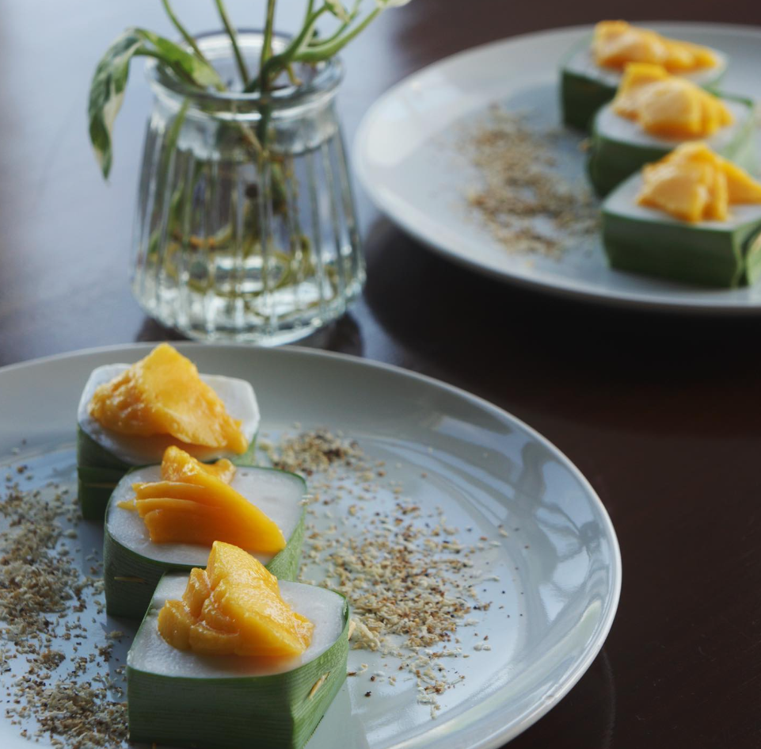

Dinner Recipes

Som Tum
This is a central Thai-style Papaya salad which has a perfect balance between sweet, sour & spicy. Unlike the usual leafy green salads, this dish has a crispy texture that blends fully with the outstanding sauce blend.If you don't like heavy foods, this is a must-try!
View Recipe

Mango Sticky Rice
Some may know this as Coconut pudding that is made out of pandan, coconut cream and topped with seasonal fruits.
View Recipe